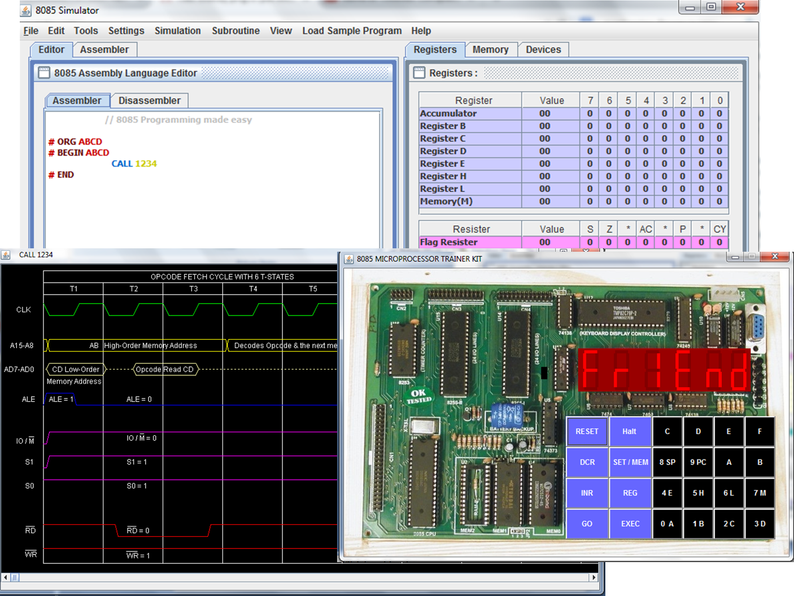

8085 Simulator version 2
By Jubin MITRA
The project is migrated from http://8085simulator.codeplex.com/.
How to run the Program ?
Simply double clicking the program, it should run.
But if it opens like a zip file, then you can be rest assured , that you do not have java installed on your machine.
Then download it from the link given below.
System Requirements:
- Need Java 6 Update 16 http://javadl.sun.com/webapps/download/AutoDL?BundleId=33889
Recommended Download:
8085 Simulator Version 2 (recent and stable Version) :
 Jubin's 8085 Simulator ver 2
Jubin's 8085 Simulator ver 2
application, 507K, uploaded Jun 1, 2014 - 2,50,000 downloads
8085 Documentation :
 8085_Documentation
8085_Documentation documentation, 4772K, uploaded Sep 4 - 25,000 downloads
8085 Simulator Version 1 (old Version) :
Jubin's 8085 Simulator ver 1
8085 Simulator Version 0 (first Version) :
Jubin's 8085 Simulator ver 0
Screenshot:

Features:
Assembler Editor- Can load Programs written in other simulator
- Auto-correct and auto-indent features
- Supports assembler directives
- Number parameters can be given in binary, decimal and hexadecimal format
- Supports writing of comments
- Supports labeling of instructions, even in macros
- Has error checking facility
- Syntax Highlighting
Disassembler Editor- Supports loading of Intel specific hex file format
- It can successfully reverse trace the original program from the assembly code, in most of the cases
- Syntax Highlighting and Auto Spacing
Assembler Workspace- Contains the Address field, Label, Mnemonics, Hex-code, Mnemonic Size, M-Cycles and T-states
- Static Timing diagram of all instruction sets are supported
- Dynamic Timing diagram during step by step simulation
- It has error checking facility also
Memory Editor- Can directly update data in a specified memory location
- It has 3 types of interface, user can choose from it according to his need.
- Show entire memory content
- Show only loaded memory location
- Store directly to specified memory location
- Allows user to choose memory range
I/O Editor- It is necessary for peripheral interfacing.
- Enables direct editing of content
Interrupt Editor- All
possible interrupts are supported. Interrupts are triggered by pressing
the appropriate column (INTR, TRAP, RST 7.5, RST 6.5, RST 5.5) on the
interrupt table. The simulation can be reset any time by pressing the
clear memory in the settings tab.
Debugger- Support of breakpoints
- Step by step execution/debugging of program.
- It supports both forward and backward traversal of programs.
- Allows continuation of program from the break-point.
Simulator- There are 3 level of speed for simulation:
- Step-by-step
: Automatic line by line execution with each line highlighting. The
time to halt at each line is be decided by the user.
- Normal : Full execution with reflecting intermittent states periodically.
- Ultimate : Full execution with reflecting final state directly.
- There are 2 modes of simulator engine:
- Run all at a Time : It takes the current settings from the simulation speed level and starts execution accordingly.
- Step
by Step : It is manual mode of control of FORWARD and BACKWARD
traversal of instruction set. It also displays the in-line comment if
available for currently executed instruction.
- Allows setting of starting address for the simulator
- Users can choose the mnemonic where program execution should terminate
Helper- Help on the mnemonics is integrated
- CODE WIZARD is a tool added to enable users with very little knowledge of assembly code could also 8085 assembly programs.
- Already loaded with plenty SAMPLE programs
- Dynamic loading of user code if placed in user_code folder
- It also includes a user manual
Printing- Assembler Content
- Workspace Content
- Register Bank --> Each register content is accompanied with its equivalent binary value*
- Accumulator, Reg B, Reg C, Reg D, Reg E, Reg H, Reg L, Memory (M)
- Flag Register
- Stack Pointer (SP)
- Memory Pointer (HL)
- Program Status Word (PSW)
- Program Counter (PC)
- Clock Cycle Counter
- Instruction Counter
- Special blocks for monitoring Flag register and the usage of SIM and RIM instruction
Crash Recovery- Can recover programs lost due to sudden shutdown or crash of application
8085 TRAINER KIT- It simulates the kit as if the user is working in the lab. It basically uses the same simulation engine at the back-end
TOOLS- Insert DELAY Subroutine TOOL
- It
is a powerful wizard to generate delay subroutine with user defined
delay using any sets of register for a particular operating frequency
of 8085 microprocessor.
- Interrupt Service Subroutine TOOL
- It is a handy way to set memory values at corresponding vector interrupt address
- Number Conversion Tool
- It
is a portable interconversion tool for Hexadecimal, decimal and binary
numbers. So, that user do not need to open separate calculator for it.
Excellent simulatorby
saurabhpatna on
Sep 4, 2017 at 5:24 PM Hello,
this is an excellent 8085 simulator !!!!!!. I have downloaded it to
include it in my Open Education Resource on 8085 instruction set. I
recommend this 8085 simulator and have created a small video to explain
basic features of the simulator. The URL of my created OER is
https://8085instructions.wordpress.com My created video on this simulator is available at https://youtu.be/vX7iSVkRQBsby
snsampat on
Aug 9, 2016 at 10:32 AM Hello
there , i downloaded the software but don't have any idea how to instal
it or run ! there is no setup file or .exe file . please help me how to
install this simulator . thank you !by
Bimal_Boro on
Feb 12, 2016 at 6:18 PM Follow the instruction in the documentationReply by
jm61288 (Coordinator) on
Feb 28, 2016 at 7:35 PM The complete simulator and an IDE ever experienced. Thank you for sharing. Great work indeed. by
lomassubedi on
Apr 15, 2015 at 4:27 PM Thank you for your work. This simulator is proving invaluable for our retro-robot project "RodneySPR"by
au_chrismor on
May 10, 2013 at 8:39 AM it is so great simulatorby
ferry2010 on
Oct 19, 2010 at 11:41 PM